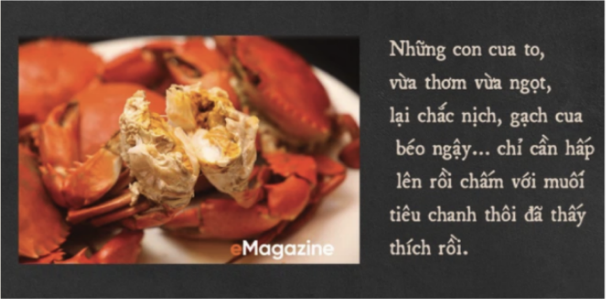

Danh mục bài viết
.accordion-body, though the transition does
limit overflow.

Món cua từ lâu đã được xếp vào top đầu những món hải sản về độ ngon và sự hấp dẫn. Bằng bàn tay tài tình, những người đầu bếp đã khéo léo biến những chú cua to xác trở thành món ăn hấp dẫn không chỉ được rất nhiều người yêu thích, mà còn chinh phục cả những thực khách khó tính nhất.
Món cua từ lâu đã được xếp vào top đầu những món hải sản về độ ngon và sự hấp dẫn. Bằng bàn tay tài tình, những người đầu bếp đã khéo léo biến những chú cua to xác trở thành món ăn hấp dẫn không chỉ được rất nhiều người yêu thích, mà còn chinh phục cả những thực khách khó tính nhất.
Món cua từ lâu đã được xếp vào top đầu những món hải sản về độ ngon và sự hấp dẫn. Bằng bàn tay tài tình, những người đầu bếp đã khéo léo biến những chú cua to xác trở thành món ăn hấp dẫn không chỉ được rất nhiều người yêu thích, mà còn chinh phục cả những thực khách khó tính nhất.
Món cua từ lâu đã được xếp vào top đầu những món hải sản về độ ngon và sự hấp dẫn. Bằng bàn tay tài tình, những người đầu bếp đã khéo léo biến những chú cua to xác trở thành món ăn hấp dẫn không chỉ được rất nhiều người yêu thích, mà còn chinh phục cả những thực khách khó tính nhất.
Món cua từ lâu đã được xếp vào top đầu những món hải sản về độ ngon và sự hấp dẫn. Bằng bàn tay tài tình, những người đầu bếp đã khéo léo biến những chú cua to xác trở thành món ăn hấp dẫn không chỉ được rất nhiều người yêu thích, mà còn chinh phục cả những thực khách khó tính nhất.
Món cua từ lâu đã được xếp vào top đầu những món hải sản về độ ngon và sự hấp dẫn. Bằng bàn tay tài tình, những người đầu bếp đã khéo léo biến những chú cua to xác trở thành món ăn hấp dẫn không chỉ được rất nhiều người yêu thích, mà còn chinh phục cả những thực khách khó tính nhất.
Bài viết được đăng bởi Chô Chô (12-09-20)
Bài viết: Vua Cua
Hình ảnh: Vua Cua & sưu tầm